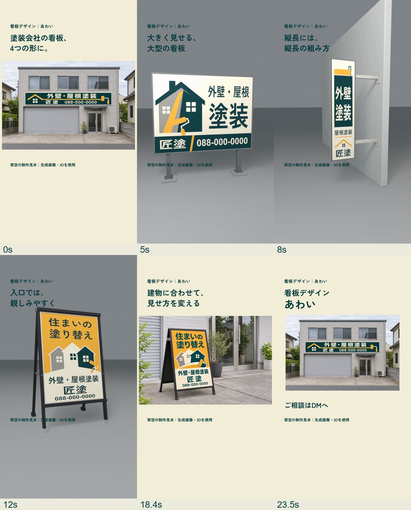

匠塗の看板広告｜確認版
4種類の看板を、Blenderの映像と建物に設置したイメージで見せる、約24秒の広告です。看板だけを主役にまとめました。
声が入っています。建物の写真、3種類の3D映像、設置イメージ、あわいへのDM案内の順です。
映像の流れ

4種類の看板を、Blenderの映像と建物に設置したイメージで見せる、約24秒の広告です。看板だけを主役にまとめました。
声が入っています。建物の写真、3種類の3D映像、設置イメージ、あわいへのDM案内の順です。
